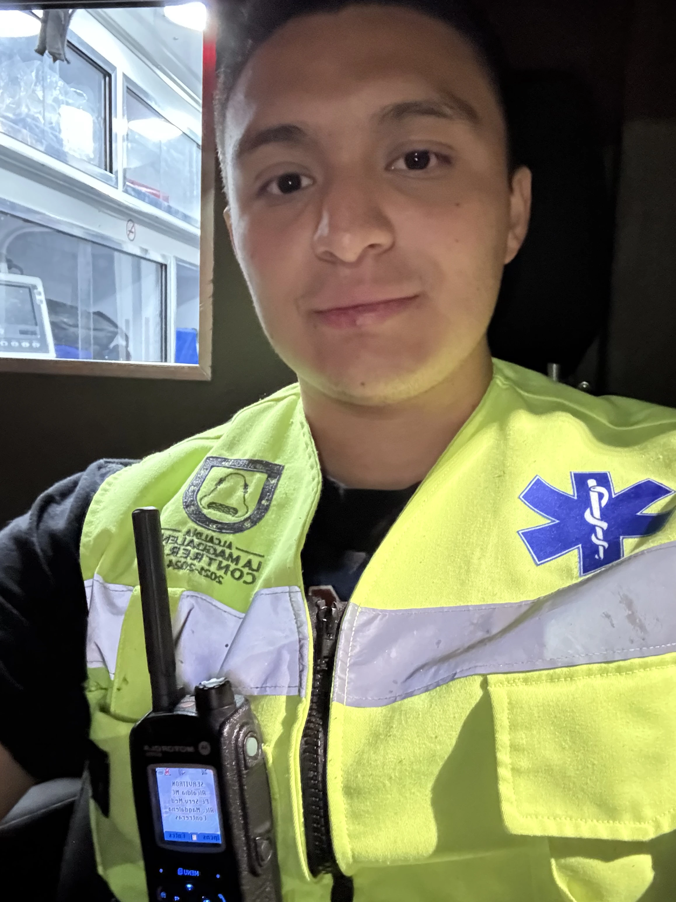

Mis Servicios y Proyectos
Desarrollador Web
Creación de páginas web modernas, rapidas y responsivas.
Conocer más →Produccion Audiovisual
Videos cinematográficos, tomas aéreas y edición profesional.
Conocer más →Paramédico
Atención prehospitalaria, cobertura de eventos y experiencia como paramédico.
Conocer más →Mis Proyectos
Explora los proyectos de software que he desarrollado y continúo construyendo.
Conocer más →Conóceme

David Flores
Estudiante de Ingeniería de Software •
Paramédico • Piloto de Dron
¡Qué onda! Soy David. Me apasiona resolver problemas, ya sea optimizando líneas de código, salvando vidas en una ambulancia o capturando tomas increíbles desde el aire con mi dron. Actualmente combino la programación, la atención prehospitalaria y la producción audiovisual para seguir aprendiendo y desarrollando proyectos que realmente generen impacto.